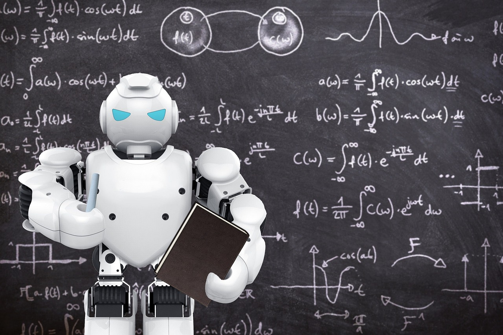

Your results seems to indicate that you are high in logical mathematical intelligence and your learning style is logical and data based
Logical-mathematical intelligence, as described by Howard Gardner, is the capacity to analyze problems logically, carry out mathematical operations effectively, and investigate issues scientifically. This form of intelligence underpins much of our analytical thinking and problem-solving abilities, influencing various aspects of academic, professional, and everyday life.
Cognitive and Academic Implications
Individuals strong in logical-mathematical intelligence excel in subjects such as mathematics, physics, computer science, and logic-based disciplines. They possess a keen ability to reason deductively, recognize patterns, and solve complex problems systematically. In educational settings, these individuals often perform well in tasks involving quantitative analysis, abstract thinking, and structured reasoning.

Problem-Solving and Decision Making
Professionals with strong logical-mathematical intelligence are adept at analyzing problems, identifying solutions, and making informed decisions based on rationality and evidence. They can evaluate risks, optimize processes, and develop strategies that maximize efficiency and effectiveness across various industries, including finance, logistics, and management.
Everyday Applications
Logical-mathematical intelligence influences everyday tasks such as budgeting, scheduling, and problem-solving. Individuals with strong analytical skills can analyze financial data, interpret statistical information, and make informed decisions in personal and professional contexts. Their ability to think logically and critically also aids in tasks requiring planning, organizing, and problem resolution.
Challenges and Opportunities
While logical-mathematical intelligence is highly valued in many fields, individuals who excel in this area may face challenges in domains that require more interpersonal skills or creative thinking. Balancing the development of emotional intelligence and creative abilities alongside logical-mathematical skills is crucial for holistic personal and professional growth.
Conclusion
Logical-mathematical intelligence plays a pivotal role in shaping how individuals perceive, understand, and interact with the world through analytical reasoning and mathematical thinking. Recognizing and nurturing this intelligence is essential for fostering innovation, problem-solving capabilities, and scientific advancements across diverse fields. By understanding its implications, educators, employers, and individuals themselves can harness and leverage logical-mathematical intelligence to achieve academic excellence, drive technological progress, and make informed decisions in a complex and interconnected world.
At last
We are happy that you are taking on this journey of finding your true self. But just finding your intelligence is not enough you have to go out there and experiement and polish your skills. And we have made it easier for you. This link would provide you with all the things you would need to get started.